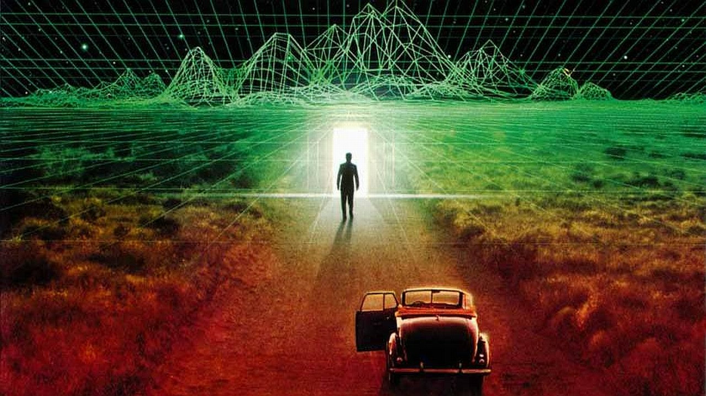
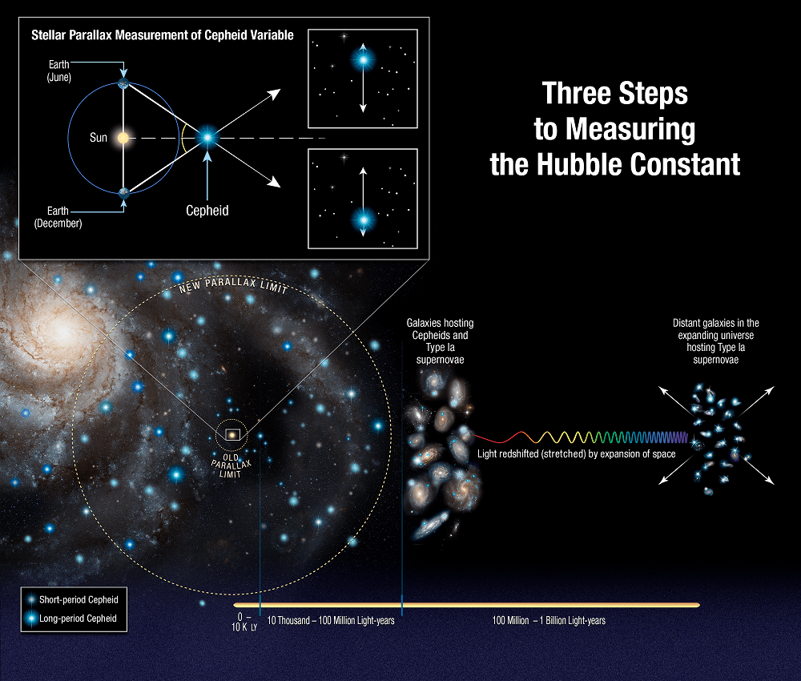

The universe began as an extremely hot and dense point around 13.8 billion years ago, expanding to form stars, galaxies, and everything we see today.
Author: Georges Lemaître
Belgian priest, astronomer, and physicist who proposed the theory of the expanding universe. He introduced the "primeval atom" concept, laying the foundation for the Big Bang theory.

Simulation Hypothesis
This idea says our universe could be an artificial simulation, perhaps like a computer program, created by a much more advanced civilization.
Author: Nick Bostrom
Swedish philosopher and Oxford professor who published a key paper in 2003 describing the possibility of our universe being a sophisticated computer simulation.

Steady State Theory
The Steady State theory claims that the universe has always existed in a constant state, with new matter forming as it expands so it always looks the same.
Authors: Fred Hoyle, Hermann Bondi, Thomas Gold
Fred Hoyle, an English astronomer, and his colleagues Bondi and Gold developed this theory in 1948, promoting the idea of an eternal and unchanging universe.
Creationism
Creationism is the belief that a divine being or higher power created the universe and life according to a specific plan or purpose, rooted in religious traditions.
Author: Ancient religious texts
Based on scriptures like Genesis in the Bible. Interpreted and defended by countless theologians throughout history, not attributed to a single modern author.
Frequently Asked Questions
Q1: Which theory is the most accepted by scientists?
A: The Big Bang theory is currently the most widely accepted explanation among scientists for the origin of the universe.
Q2: Could our universe be a computer simulation?
A: There’s no direct evidence, but some philosophers and scientists consider it possible. It remains a subject of active debate and speculation.
Q3: What’s the main difference between the Big Bang and Steady State theories?
A: The Big Bang theory suggests a definite starting point and expansion, whereas the Steady State theory argues the universe is eternal and always looks the same.
Q4: Does Creationism conflict with scientific theories?
A: Creationism is based on faith and religious beliefs, while scientific theories rely on evidence. Some people see them as compatible, others as separate ways of understanding the universe.